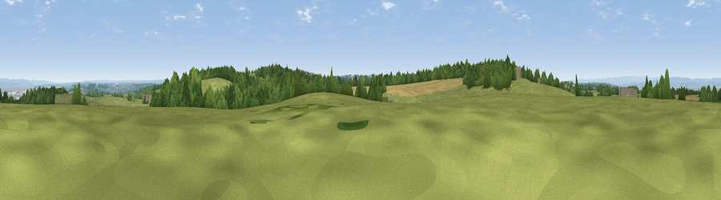

Viewpoint near Wraxall
#15028 in England · top 27% of its area beats it · near Wraxall · path 258 mWhere it is
The exact computed spot (ST 50125 73075). Click the marker for map links.
Public access: the nearest public right of way is about 258 m away — the final stretch may cross private land. Computed from Natural England's CRoW access layer and OpenStreetMap rights of way — not the legal definitive map. Always verify locally.
The view, rendered

A 360° render of this exact spot computed from the terrain model, tree cover and land cover — summer colours, afternoon light, calibrated against photographs of famous viewpoints. Real trees, hedges and buildings will differ in detail.
The panorama
Grey silhouette: terrain skyline in each direction (720 bearings, Earth curvature and refraction included). Dashed green: skyline with trees (+15 m) and buildings (+8 m) as obstacles. Blue strip: how far the ground is visible on each bearing.
Where the view opens
Wedge length = distance to the farthest visible ground on that bearing (vegetation-aware). Rings at 10, 25 and 50 km.
What fills the view
45% grassland · 29% woodland · 13% cropland · 6% built-up · 6% water
Angular shares of the visible panorama (visual magnitude), not map area. Landscape diversity 0.58 (0–1 Shannon).
Key numbers
More beautiful places nearby
The staircase of upgrades: each row has a higher view potential than everything closer. Driving times are estimates from straight-line distance, calibrated against real road routing — check an actual route before setting out.
| Place | Direction | Drive | Score |
|---|---|---|---|
| Viewpoint near Portbury | NNE · 1 km | ~3 min | 60.8 |
| Viewpoint near Wraxall | SSW · 1 km | ~4 min | 63.2 |
| Viewpoint near Portbury | NW · 1 km | ~4 min | 63.6 |
| Viewpoint near Tickenham | W · 5 km | ~11 min | 72.1 |
| Dundry Hill | SE · 8 km | ~16 min | 72.4 |
| Dial Hill | W · 9 km | ~18 min | 74.9 |
| Beacon Batch | S · 16 km | ~28 min | 79.4 |
| Bleadon Hill [Loxton Hill] | SW · 21 km | ~35 min | 79.6 |
51.45445, -2.71919 · source: screening · position refined by local search. Computed location — check access rights before visiting.